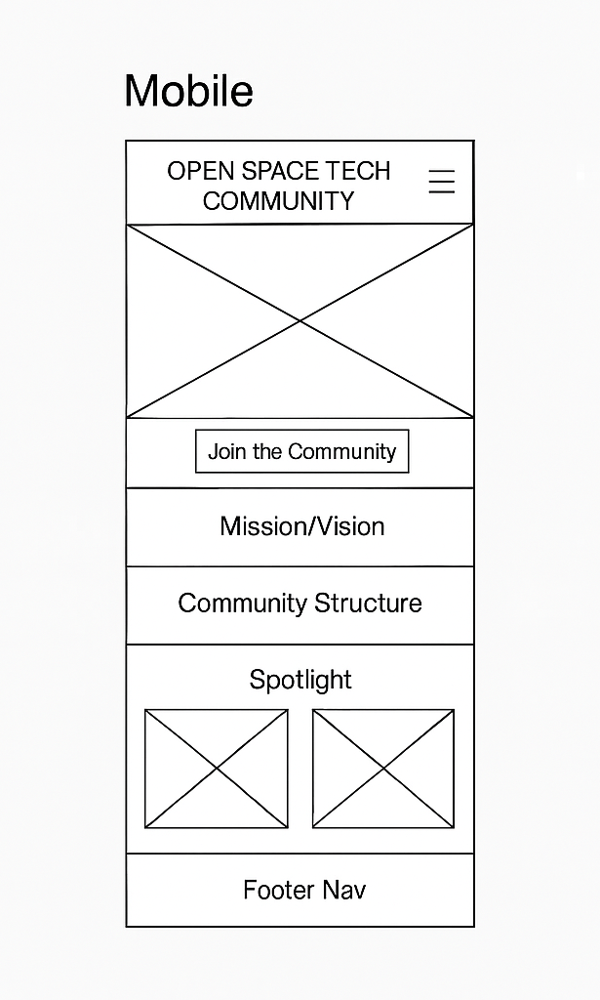
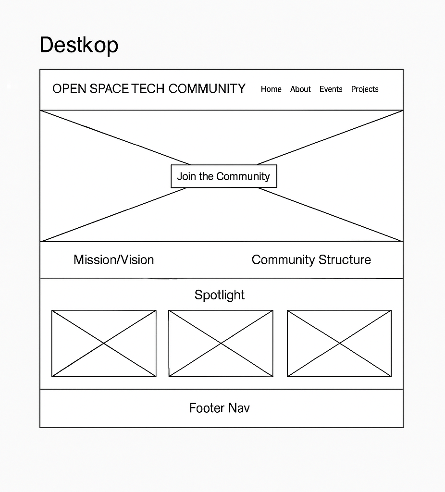

Site Name
Open Space Tech Community
This name reflects the inclusive and collaborative space for UNICROSS students interested in tech, emphasizing creativity, openness, and innovation.
Optional domain: openspace-tech.org or openspaceunicross.dev
Site Purpose
The purpose of this website is to serve as a central hub for the Open Space Tech Community at UNICROSS. It provides information about the community’s mission, structure, events, mentorship, and ongoing tech projects. Visitors can explore how to join, access learning resources, and engage in collaborative work.
Scenarios
- How can I join the Open Space Tech Community and participate in weekly meetups?
- Where can I find learning resources or get a mentor in my tech journey?
- What kinds of projects are members currently working on, and how can I contribute?
Color Schema
- Primary Color: #1a1a40 (Dark Navy) – used for headers, nav, and backgrounds.
- Accent Color: #00c2cb (Tech Cyan) – used for buttons, highlights, and callouts.
- Neutral: #ffffff (White) – body background and base content color.
These colors reflect a techy, futuristic, and clean aesthetic suitable for a young, ambitious audience.
Typography
- Headings: "Orbitron", sans-serif – a modern, tech-style font used for titles.
- Body: "Inter", sans-serif – clean and highly readable, used for all content text.
Fonts will be imported from Google Fonts and used sitewide to maintain consistency and modern appearance.
Wireframes
Mobile View:
Desktop View:
Note: Wireframes show layout placeholders for hero section, mission/vision, structure breakdown, spotlight cards, and footer nav.